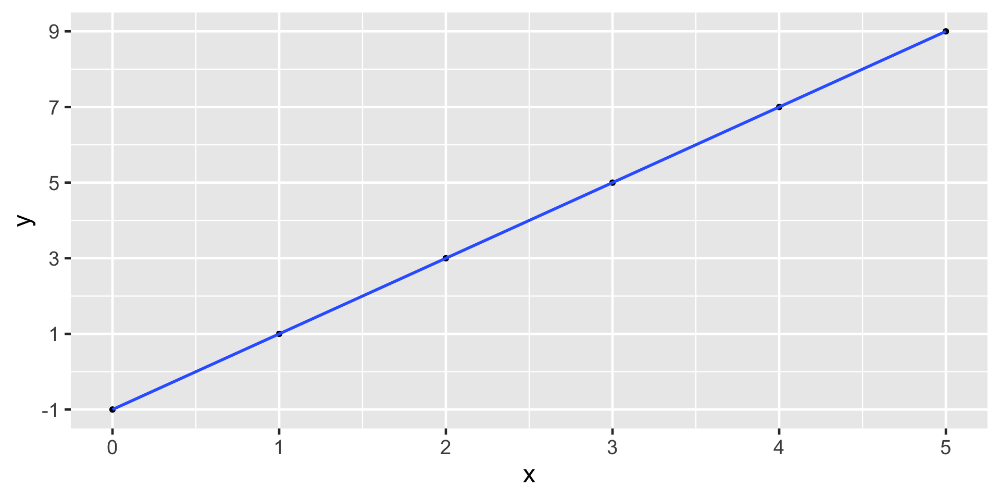
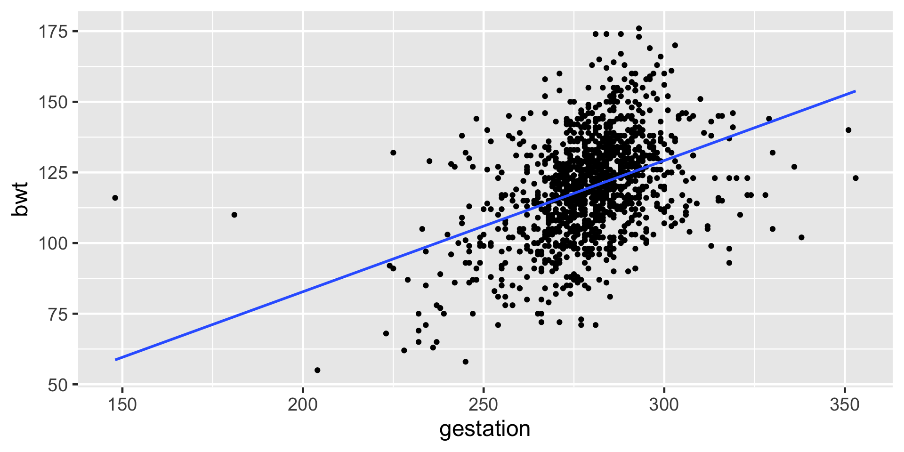
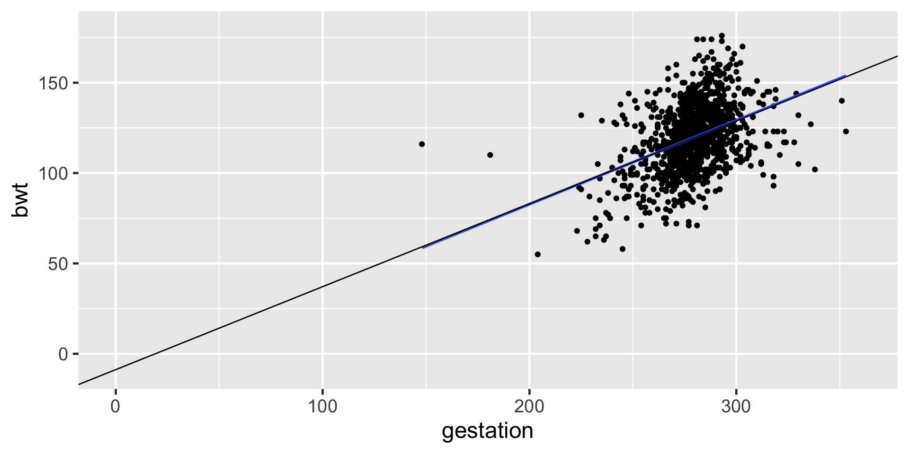
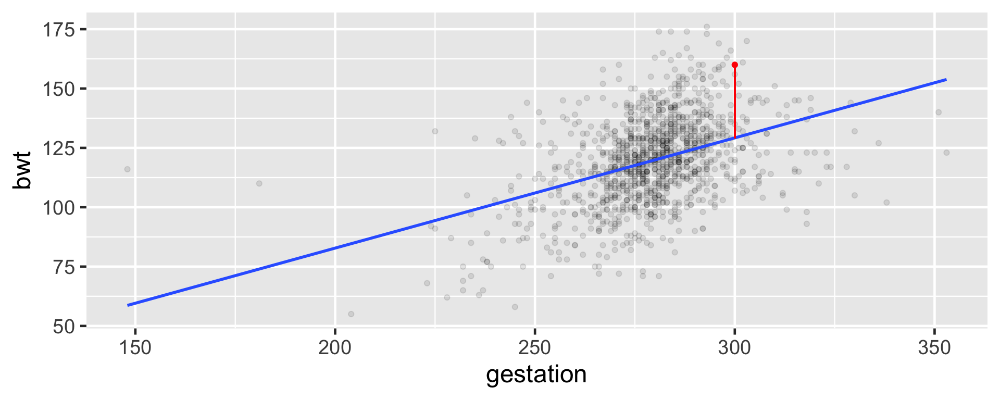
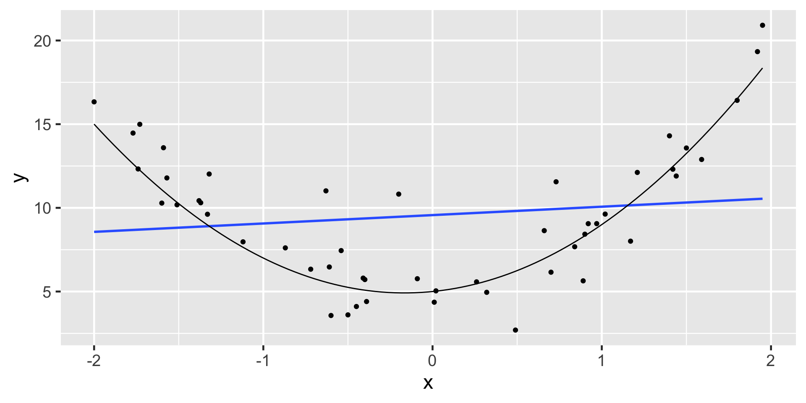
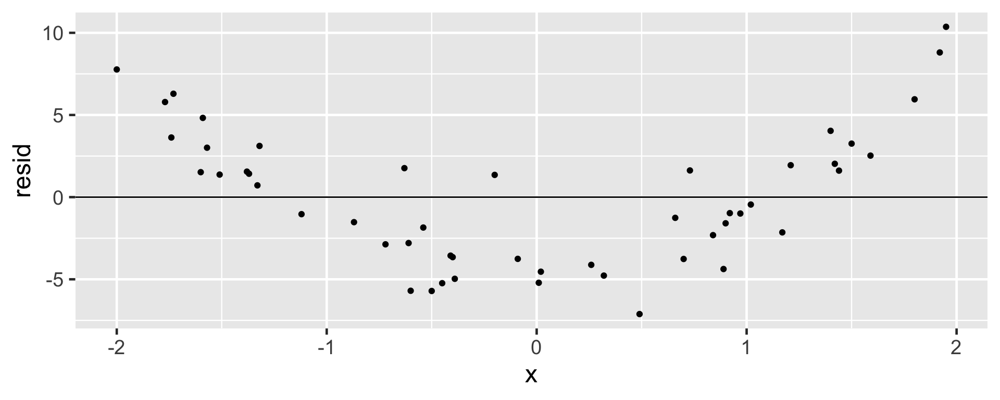
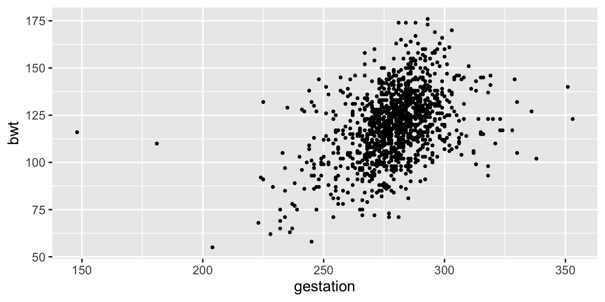
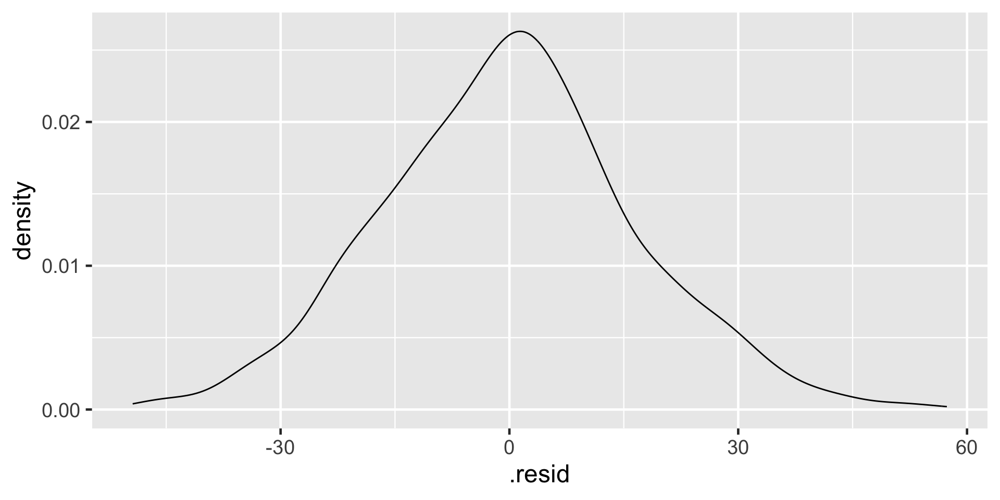

Rows: 1,236
Columns: 8
$ case <int> 1, 2, 3, 4, 5, 6, 7, 8, 9, 10, 11, 12, 13, 14, 15, 16, 17, 1…
$ bwt <int> 120, 113, 128, 123, 108, 136, 138, 132, 120, 143, 140, 144, …
$ gestation <int> 284, 282, 279, NA, 282, 286, 244, 245, 289, 299, 351, 282, 2…
$ parity <int> 0, 0, 0, 0, 0, 0, 0, 0, 0, 0, 0, 0, 0, 0, 0, 0, 0, 0, 0, 0, …
$ age <int> 27, 33, 28, 36, 23, 25, 33, 23, 25, 30, 27, 32, 23, 36, 30, …
$ height <int> 62, 64, 64, 69, 67, 62, 62, 65, 62, 66, 68, 64, 63, 61, 63, …
$ weight <int> 100, 135, 115, 190, 125, 93, 178, 140, 125, 136, 120, 124, 1…
$ smoke <int> 0, 0, 1, 0, 1, 0, 0, 0, 0, 1, 0, 1, 1, 1, 0, 0, 1, 1, 0, 1, …Linear Regression
Overview
- Review Linear Regression Concepts from your Data Science Courses
- Conditions for Least Squares Regression
- Multiple Linear Regression
- Model Evaluation
Data babies in openintro package
Baby Weights
Baby Weights
Numerical Response and Numerical Explanatory Variable
| Variable | Variable Name | Type of Variable |
|---|---|---|
| Response (y) | Birth weight | Numeric |
| Explanatory (x) | Gestation | Numeric |
Linear Equations Review
Recall from your previous math classes
\(y = mx + b\)
where \(m\) is the slope and \(b\) is the y-intercept
e.g. \(y = 2x -1\)

Notice anything different between baby weights plot and this one?
Equations
Math class
\(y = b + mx\)
\(b\) is y-intercept
\(m\) is slope
Stats class
\(\mu_i = \beta_0 +\beta_1x_i + \epsilon_i\)
\(\beta_0\) is y-intercept
\(\beta_1\) is slope
\(\epsilon_i\) is error/residual
\(i = 1, 2, ...n\) identifier for each point
Fitting a Linear Model in R
lm stands for linear model. We are fitting a linear regression model. Note that the variables are entered in y ~ x order.
Fitting a Linear Model in R
# A tibble: 2 × 5
term estimate std.error statistic p.value
<chr> <dbl> <dbl> <dbl> <dbl>
1 (Intercept) -10.1 8.32 -1.21 2.27e- 1
2 gestation 0.464 0.0297 15.6 3.22e-50\(\hat {\mu}_i = \hat \beta_0 + \hat \beta_1 x_i\)
\(\hat {\text{bwt}_i} = \hat \beta_0 + \hat \beta_1 \text{ gestation}_i\)
\(\hat {\text{bwt}_i} = -10.1 + 0.464\text{ gestation}_i\)
Expected bwt for a baby with 300 days of gestation
\(\hat {\text{bwt}_i} = -10.1 + 0.464\text{ gestation}_i\)
\(\hat {\text{bwt}} = -10.1 + 0.464 \times 300\)
\(\hat {\text{bwt}} = 129.1\)
For a baby with 300 days of gestation the expected birth weight is 129.1 ounces.
Interpretation of estimates

\(\hat \beta_1 = 0.464\) which means for one unit(day) increase in gestation period the expected increase in birth weight is 0.464 ounces.

\(\hat \beta_0 = -10.1\) which means for gestation period of 0 days the expected birth weight is -10.1 ounces!!!!!!!! (does NOT make sense)
Extrapolation
- There is no such thing as 0 days of gestation.
- Birth weight cannot possibly be -10.1 ounces.
- Extrapolation happens when we use a model outside the range of the x-values that are observed. After all, we cannot really know how the model behaves (e.g. may be non-linear) outside of the scope of what we have observed.
Baby number 148
Baby #148
Expected
\(\hat \mu_{148} = \hat \beta_0 + \hat \beta_1x_{148}\)
\(\hat \mu_{148} = -10.1 + 0.464\times300\)
\(\hat \mu_{148} = 129.1\)
Observed
\[\mu_{148} = 160 \]
Residual for i = 148

\(y_{148} = 160\)
\(\hat \mu_{148}\) = 129.1
\(e_{148} = y_{148} - \hat \mu_{148}\)
\(e_{148} =\) 30.9
Least Squares Regression
The goal is to minimize
\[e_1^2 + e_2^2 + ... + e_n^2\]
which can be rewritten as
\[\sum_{i = 1}^n e_i^2\]
Inference: Confidence Interval (theoretical)
Note that the 95% confidence interval for the slope does not contain zero and all the values in the interval are positive indicating a significant positive relationship between gestation and birth weight.
Numerical Response and Categorical Explanatory Variable
| Variable | Variable Name | Type of Variable |
|---|---|---|
| Response (y) | Birth weight | Numeric |
| Explanatory (x) | Smoke | Categorical |
Notation
\(y_i = \beta_0 +\beta_1x_i + \epsilon_i\)
\(\beta_0\) is y-intercept
\(\beta_1\) is slope
\(\epsilon_i\) is error/residual
\(i = 1, 2, ...n\) identifier for each point
Fitting the model in R
# A tibble: 2 × 5
term estimate std.error statistic p.value
<chr> <dbl> <dbl> <dbl> <dbl>
1 (Intercept) 123. 0.649 190. 0
2 smoke -8.94 1.03 -8.65 1.55e-17\(\hat {\mu}_i = \hat \beta_0 + \hat \beta_1 x_i\)
\(\hat {\text{bwt}_i} = \hat \beta_0 + \hat \beta_1 \text{ smoke}_i\)
\(\hat {\text{bwt}_i} = 123 + (-8.94\text{ smoke}_i)\)
Interpretation
Expected bwt for a baby with a non-smoker mother
\(\hat {\text{bwt}_i} = 123 + (-8.94\text{ smoke}_i)\)
\(\hat {\text{bwt}_i} = 123 + (-8.94\times 0)\)
\(\hat {\text{bwt}_i} = 123\)
\(E[bwt_i | smoke_i = 0] = \hat \beta_0\)
Expected bwt for a baby with a smoker mother
\(\hat {\text{bwt}_i} = 123 + (-8.94\text{ smoke}_i)\)
\(\hat {\text{bwt}_i} = 123 + (-8.94\times 1)\)
\(\hat {\text{bwt}_i} = 114.06\)
\(E[bwt_i | smoke_i = 1] = \hat \beta_0 + \hat \beta_1\)
Evaluating Regression Models
- How fair is the model? How was the data collected? By whom and for what purpose? How might the results of the analysis, or the data collection itself, impact individuals and society? What biases or power structures might be baked into this analysis?
- How wrong is the model? George Box famously said: “All models are wrong, but some are useful.” What’s important to know then is, how wrong is our model? Are our model assumptions reasonable?
Is the model fair?
- How was the data collected?
- By whom and for what purpose was the data collected?
- How might the results of the analysis, or the data collection itself, impact individuals and society?
- What biases might be baked into this analysis?
Models are not always fair!
- Unfair models are unfortunately abundant:
- As recently as 2015, a major corporation reportedly utilized a model to evaluate applicants’ résumés for technical posts. They scrapped this model upon discovering that, by building this model using résumé data from its current technical employees (mostly men), it reinforced a preference for male job applicants (Dastin 2018).
- Facial recognition models, increasingly used in police surveillance, are often built using image data of researchers that do not represent the whole of society. Thus, when applied in practice, misidentification is more common among people that are underrepresented in the research process. Given the severe consequences of misidentification, including false arrest, citizens are pushing back on the use of this technology in their communities (Harmon 2019).
How wrong is the model?
- All models are wrong - Mainly, statistical models are idealistic representations of more complex realities.
- Even so, good statistical models can still be useful and inform our understanding of the world’s complexities.
- The next question to ask in evaluating our model is not, is the model wrong, but how wrong is the model?
- Specifically, to what extent do the assumptions behind our linear regression model match reality?
Conditions for Least Squares Regression: LINE
- L: Linear model
- I: Independent observation
- N: Normality of residuals
- E: Equal/constant variability around the line for all values of the explanatory variable
Linearity
- Probably the most important condition
- The data should have a linear trend
- If the data illustrate a non-linear trend, then more advanced regression methods could be considered
Linearity
A residual plot is one where the residuals are plotted against the explanatory variable.
- Points in the residual plot must be randomly scattered, with no pattern, and “close” to 0.
Non-linear Trend
Linear model not appropriate
Independent Observations
- Cases must be independent of one-another
- Individuals must not be related (associated) to other individuals
- Harder to check because we need to know how the data were collected
- Be aware of data that come from sequential observations in time as they come with an underlying structure that needs to be considered when modeling - dependent data can bias results
Nearly Normal Residuals
- Residuals should be nearly normal
- This condition can often be influenced by outliers
- While important, this condition can often be avoided through considering bootstrap procedures
Equal or Constant Variability
- The variability (scattered-ness) of the residual plot must be about the same throughout the plot.
- Data that do not satisfy this condition will potentially influence and mis-estimate the variability of the slope, impacting the inference
- A change in the variability as the explanatory variable increases means that predictions may not be reliable
Non-constant Variance
When all technical conditions are met:
- The least squares regression model (and related inference) has important extensions (which are not trivial to implement with bootstrapping and randomization tests).
- In particular, random effects models, repeated measures, and interaction are all linear model extensions which require the above technical conditions.
Verifying Conditions for the Baby Weights Example
Linearity: Using scattered plot
Linearity and constant variance: Using residual plot
- First, add residuals to your data. Next, plot the explanatory variable against the residuals and add a line through
y = 0
Normality of residuals
Independence
- In the description of the dataset it says a study considered all pregnancies between 1960 and 1967 among women in the Kaiser Foundation Health Plan in the San Francisco East Bay area.
- It is possible that babies born in the same hospital may have similar birth weight.
- Correlated data examples: patients within hospitals, students within schools, people within neighborhoods, time-series data.
Multiple Linear Regression
| Variable | Variable Name | Type of Variable |
|---|---|---|
| Response (y) | Birth weight | Numeric |
| Explanatory (x1) | Smoke | Categorical |
| Explanatory (x2) | Gestation | Numeric |
Notation for Multiple Linear Regression
\(y_i = \beta_0 +\beta_1x_{1i} + \beta_2x_{2i} + \epsilon_i\)
\(\beta_0\) is intercept
\(\beta_1\) is the slope for gestation
\(\beta_2\) is the slope for smoke \(\epsilon_i\) is error/residual
\(i = 1, 2, ...n\) identifier for each point
Multiple Linear Regression in R
# A tibble: 3 × 5
term estimate std.error statistic p.value
<chr> <dbl> <dbl> <dbl> <dbl>
1 (Intercept) -0.932 8.15 -0.114 9.09e- 1
2 gestation 0.443 0.0290 15.3 3.16e-48
3 smoke -8.09 0.953 -8.49 5.96e-17Expected birth weight for a baby who had 280 days of gestation with a smoker mother
\(\hat {\text{bwt}_i} = b_0 + b_1 \text{ gestation}_i + b_2 \text{ smoke}_i\)
\(\hat {\text{bwt}_i} = -0.932 + (0.443 \times 280) + (-8.09 \times 1)\)
Model Evaluation: \(R^2\)
21% of the variation in birth weight is explained by gestation. Higher values of R squared is preferred.
Multiple Linear Regression with Three Predictors
Comparing Models: Single Predictor
# A tibble: 1,236 × 3
bwt pred resid
<int> <dbl> <dbl>
1 120 122. -1.79
2 113 121. -7.86
3 128 119. 8.53
4 123 NA NA
5 108 121. -12.9
6 136 123. 13.3
7 138 103. 34.8
8 132 104. 28.3
9 120 124. -4.11
10 143 129. 14.2
# ℹ 1,226 more rowsComparing Models: Three Predictors
# A tibble: 1,236 × 3
bwt pred resid
<int> <dbl> <dbl>
1 120 125. -4.80
2 113 125. -11.5
3 128 115. 13.3
4 123 NA NA
5 108 115. -7.47
6 136 125. 10.5
7 138 108. 30.4
8 132 107. 25.0
9 120 127. -6.81
10 143 124. 19.2
# ℹ 1,226 more rowsRoot Mean Square Error
\(RMSE = \sqrt{\frac{\Sigma_{i=1}^n(y_i-\hat y_i)^2}{n}}\)
Can we keep adding all the variables and try to get an EXCELLENT model fit?
Overfitting
We are fitting the model to sample data.
Our goal is to understand the population data.
If we make our model too perfect for our sample data, the model may not perform as well with other sample data from the population.
In this case we would be overfitting the data.
We can use model validation techniques.
Modeling Overfitting: Cross-validation
Data sets are often divided into two sets:
- Training: Set of data on which you build your model
- Testing: After your model is built, this set of data is used to test it by evaluating it against data that it has not previously seen.
“Perhaps the most elementary mistake in predictive analytics is to overfit your model to the training data, only to see it later perform miserably on the testing set.”
Splitting the Data (Train vs. Test)
Train vs. Test
Training Data
# A tibble: 1 × 12
r.squared adj.r.squared sigma statistic p.value df logLik AIC BIC
<dbl> <dbl> <dbl> <dbl> <dbl> <dbl> <dbl> <dbl> <dbl>
1 0.204 0.201 16.4 76.8 2.87e-44 3 -3815. 7641. 7665.
# ℹ 3 more variables: deviance <dbl>, df.residual <int>, nobs <int>[1] 16.31741Testing Data
# A tibble: 1 × 12
r.squared adj.r.squared sigma statistic p.value df logLik AIC BIC
<dbl> <dbl> <dbl> <dbl> <dbl> <dbl> <dbl> <dbl> <dbl>
1 0.243 0.236 15.8 32.2 4.21e-18 3 -1272. 2553. 2572.
# ℹ 3 more variables: deviance <dbl>, df.residual <int>, nobs <int>[1] 15.64897